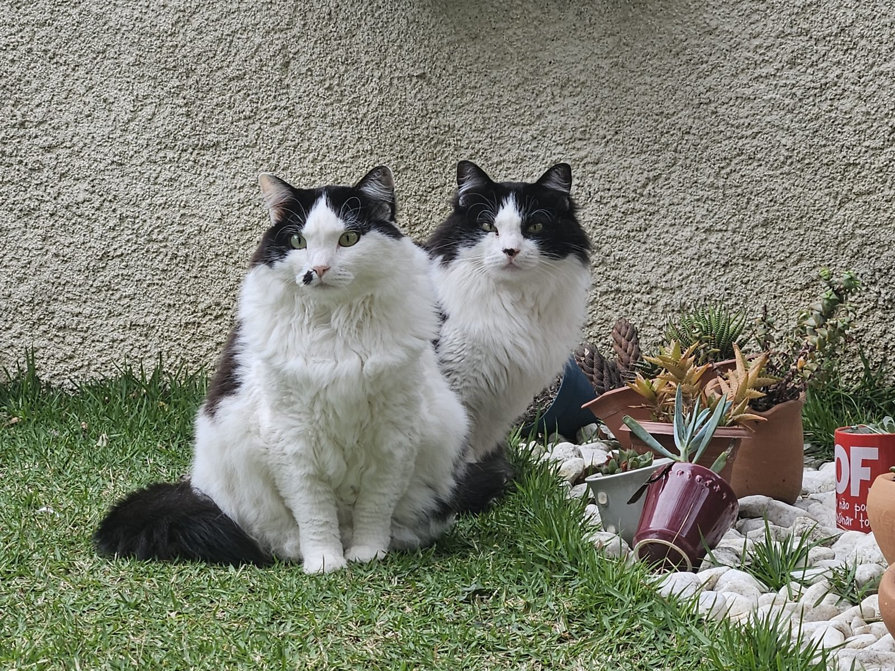

// palestra
Carreira Tech e seu futuro!
Tecnologia, escolhas e o que vem por aí
Mateus Vieira da Assunção
Software Engineer Sr. · Tech Lead @ Itaú Unibanco
01 · quem sou eu
Prazer, Mateus
- Já estive onde vocês estão: ensino médio na ETEC
- Engenheiro de Controle e Automação pela UFLA
- Pós em Arquitetura de Sistemas pela FIAP
- Já fui professor de matemática em cursinho
- Hoje: Tech Lead no Itaú Unibanco
01 · fora do trabalho
Quando não estou programando…
Palmeirense
Futebol é paixão
Seattle Seahawks
Também curto futebol americano
Marcenaria
Meu hobby: transformar madeira em coisas úteis
Hobby nº 2
Ouvir a professora Ana Flavia reclamar que vocês bagunçam demais 😄
01 · minha família
Ana Flavia e os gatos

01 · o começo
Quando comecei a trabalhar?
- 2008 Ensino médio na ETEC + SENAI de mecânica de usinagem
- 2009 1º emprego: aprendiz Fibria · Jacareí
- 2011 Faculdade de engenharia Controle e Automação · UFLA (MG)
- 2013 Carro elétrico e robôs LEGO Pesquisa e projetos na UFLA
- 2016 Professor de matemática Cursinho pré-vestibular · Unesp SJC
- 2016 Estágio no Itaú Unibanco Início da carreira corporativa
01 · resumindo
Eu, em código
const mateus = {
trabalho: 'Tech Lead @ Itaú Unibanco',
stack: ['Power Platform', 'Dynamics 365', 'Azure', '.NET'],
time: 'Palmeiras',
nfl: 'Seattle Seahawks',
hobby: 'marcenaria',
idiomas: ['pt-BR', 'en'],
aprendendo: true, // sempre!
};02 · o primeiro crachá
2016
Como foi começar a trabalhar? Como era trabalhar?
02 · itaú unibanco · 2016–2021
Como era trabalhar
O que era ótimo 👍
- Uma empresa excelente
- Ótimos benefícios
- Muito à frente no mercado
- Cresci de estagiário a sênior
O que faltava 🤔
- Eu trabalhava com projetos e planejamento
- Mas sempre quis trabalhar com tecnologia
- Em 2020 criei meu primeiro app com Power Apps
- …e não quis mais parar 🚀
“Mesmo como Sênior e com um bom salário, resolvi arriscar e aceitei uma oportunidade.”
03 · transição de carreira
Começar de novo
- Fui para a Ambev Global Tech como PJ (terceirizado)
- Comecei como desenvolvedor, o famoso “Dev”
- Num ramo onde eu nunca tinha trabalhado
- Tive que conquistar a confiança de todo mundo
03 · trajetória
Da engenharia ao código
- 2016 Projetos e planejamento Itaú Unibanco
- 2020 Primeiro app → Scrum Master Itaú Unibanco
- 2021 Desenvolvedor (PJ) Ambev Global Tech
- 2022 Tech Lead Ambev · time global
- 2024 Eng. de Software Sr. De volta ao Itaú
- 2026 Eng. de Software Sr. · Tech Lead Itaú Unibanco
03 · em números
Até aqui
04 · programar em 2026
Como é desenvolver software hoje?
- IA como parceira: a gente descreve, ela escreve, a gente revisa
- Low-code: criar apps arrastando blocos (Power Platform)
- Nuvem: sistemas rodando em data centers do mundo todo
- Trabalho em time: ninguém faz nada sozinho
04 · interação ao vivo
Vamos criar um app agora! 🚀
Crie um app web, em um único arquivo HTML, para os alunos
da nossa escola. A ideia da turma é: [ideia da turma].
O app precisa ter: [funcionalidade escolhida].
Use visual moderno e colorido, funcione bem no celular
e escreva todos os textos em português.link do app → [colar aqui depois de gerar]
05 · perguntas difíceis
Mas e…?
…o meio ambiente? …a tal bolha da IA? Isso é real?
05 · meio ambiente
A IA tem um custo ambiental
O problema 🌡️
- IA roda em data centers gigantes
- Eles gastam muita energia elétrica
- E muita água para resfriar as máquinas
Os caminhos 🌱
- Energia renovável nos data centers
- Modelos menores e mais eficientes
- Uso consciente: IA para o que vale a pena
05 · a bolha
A bolha da IA é real?
- Empresas estão investindo quantias gigantes em IA
- Muitas ainda não dão lucro, e a expectativa é enorme
- Já vimos isso: a bolha da internet estourou em 2000
- Muitas empresas quebraram… mas a internet ficou
05 · história · 1999→2000
O bug do milênio (Y2K)
- Sistemas antigos guardavam o ano com 2 dígitos:
99 - Na virada,
00poderia virar 1900 em vez de 2000 - Medo de pane em bancos, aviões, energia…
- O mundo gastou bilhões corrigindo, e a virada passou quase sem problemas
05 · história · 2008
A crise de 2008
- Bancos dos EUA emprestaram para quem não conseguia pagar
- Os preços dos imóveis eram uma bolha, e ela estourou
- O banco Lehman Brothers quebrou e a crise ficou mundial
- Depois vieram regras mais duras e mais tecnologia para medir riscos
06 · o trabalho hoje
Como é o meu trabalho hoje?
- Guiar o time: decidir como construir cada solução
- Revisar código e ajudar quem está travado
- Conversar muito: com o time, com as áreas, com os clientes
- Usar IA no dia a dia para ir mais rápido
06 · o trabalho hoje
E o limite de tokens?
O que é token?
- Um pedacinho de texto que a IA lê ou escreve
- Toda pergunta e resposta gasta tokens
- Os planos têm limite por período
Como eu lido
- Pedidos claros e objetivos
- Dividir o trabalho em partes menores
- Saber programar sem IA quando o limite acaba
06 · essa semana · 12/11/2026
E quando tudo cai?
Microsoft 365 fora do ar
- Outlook, Teams, OneDrive e Copilot com falhas
- Começou por volta das 14h30 e seguiu no dia seguinte
- +50 mil reclamações só até as 18h
- Causa: sobrecarga, não foi ataque hacker
O que aprendemos
- Dependemos muito da nuvem
- Todo time precisa de um plano B
- Comunicar rápido e manter a calma
// sua vez
Perguntas?
Pode perguntar qualquer coisa, sobre carreira, faculdade, IA, salário…
// para levar
A história é cíclica
- 2000 Bug do milênio e bolha da internet A internet ficou
- 2008 Crise financeira mundial Bancos se reinventaram
- 2026 IA, energia e bolha? O que vamos construir?
- 20?? Novas tecnologias Novos problemas, e vocês vão resolver
Novas tecnologias surgem, e novos problemas aparecem.
// para levar
O que mais importa: estudar
- Base forte: matemática, lógica e inglês
- Curiosidade: crie projetos, teste, quebre, conserte
- Aproveite ETEC, SENAI, Fatec e universidades públicas
- A tecnologia muda, e quem estuda se prepara para ela
// interação ao vivo
Como ficou nosso app? 🛠️
Ajuste o app que você criou:
1. [ajuste 1 pedido pela turma]
2. [ajuste 2 pedido pela turma]
3. Adicione um rodapé: "Feito ao vivo pela turma [turma] · 2026".
Mantenha tudo em um único arquivo HTML.// fim
Obrigado!
Bora construir o futuro? 🚀
- github @omateusassuncao
- x @omateusvieira
- linkedin /in/mateusvassuncao